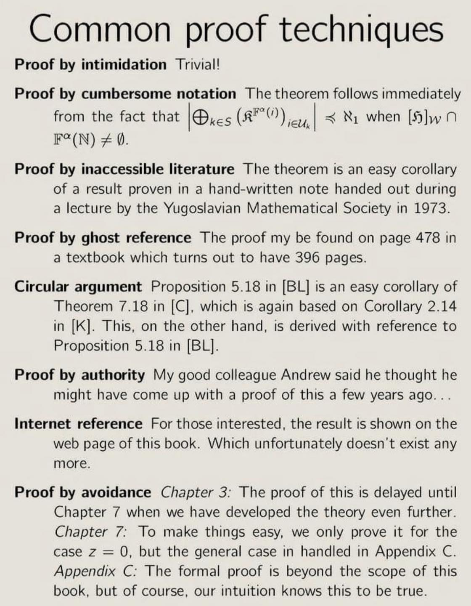
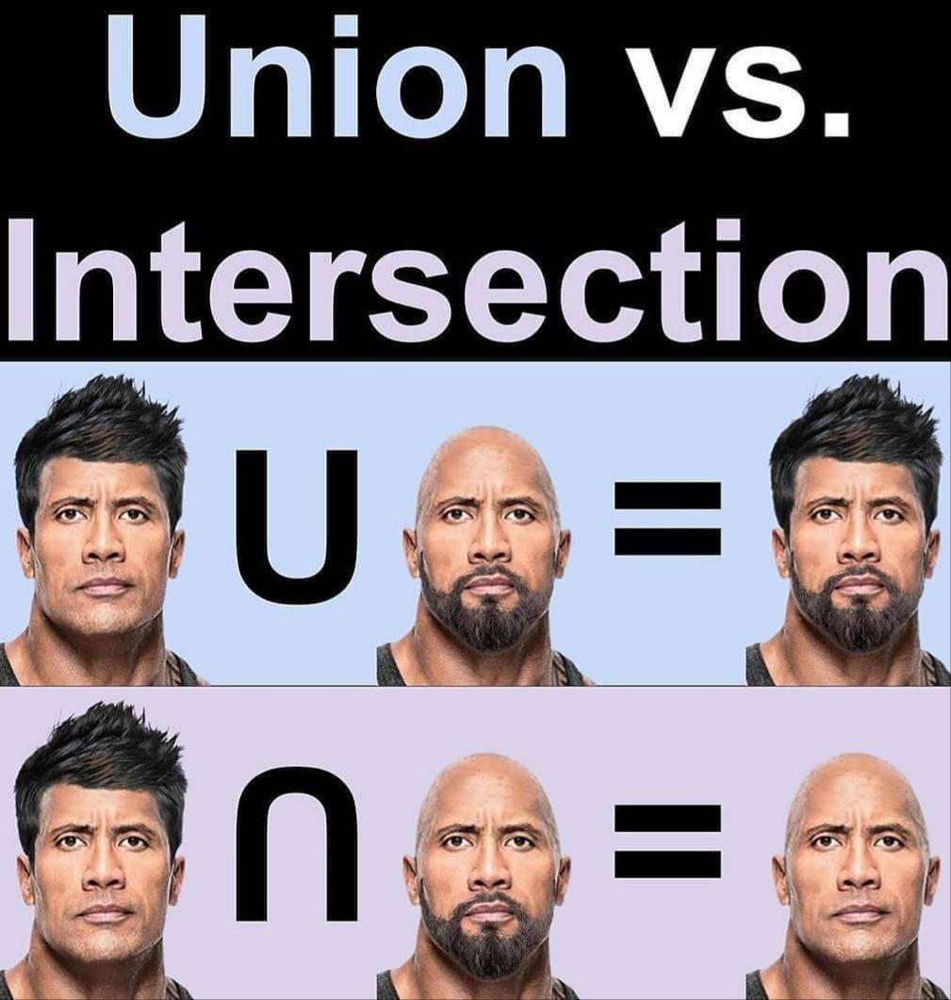
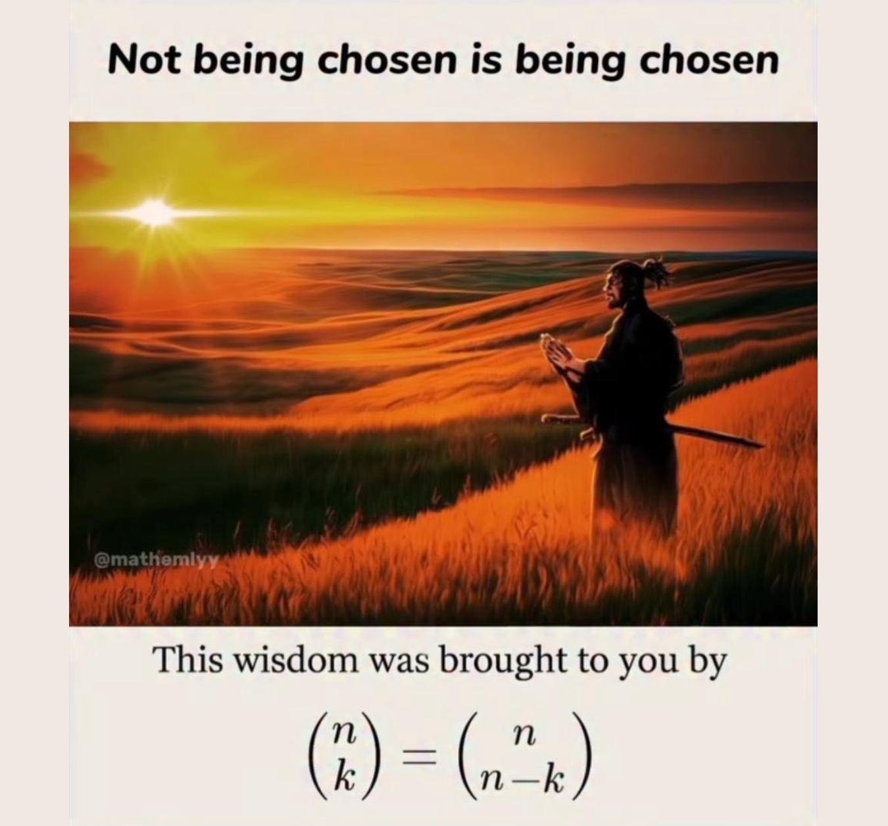

Discrete Mathematics 1
Format
Flipped
In-class meetings
Thursday, 9 AM
Deadlines
Wednesday, 11:59 PM
Proofs

Proofs of Existence and Optimality
Proofs of Universal Statements: Mathematical Induction
Proofs of Algorithm Correctness and Runtime Estimates
Proofs in Computer Science (Optional)
Project: 15 Puzzle, A*, and Coordinated Motion Planning
Logic
Propositional Logic
Satisfiability Problem
Boolean Circuits
Project: Optimal Circuit Synthesis with SAT
Set Theory

Set Theory
Partially Ordered Sets
Combinatorics

Arrangements and Combinations
Generation of Combinatorial Objects
Recurrence Relations
Generating Functions
Project: Portfolio Selection